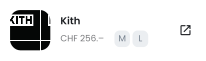

Inspiration direkt in deinen Kleiderschrank
SC-YN vereinfacht dir den Weg von deiner Inspirationsquelle bis zum Einkauf. Lass dich durch personalisierte Inspiration leiten, entdecke Neues oder finde spezifische Produkte über die Scan-Funktion. Dein nächster Einkauf ist nur einen SC-YN entfernt.
Zum Projekt

